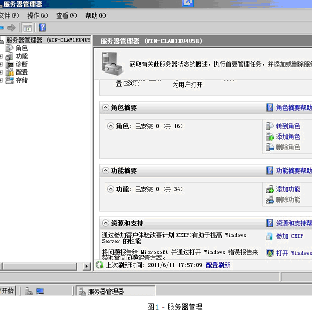
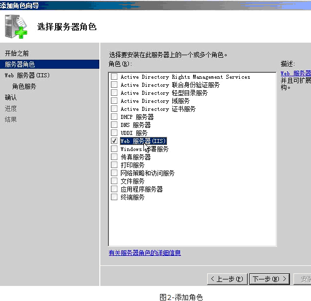
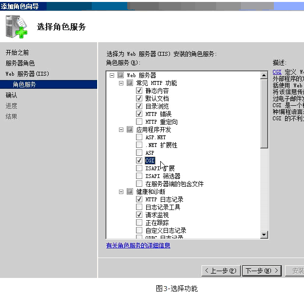
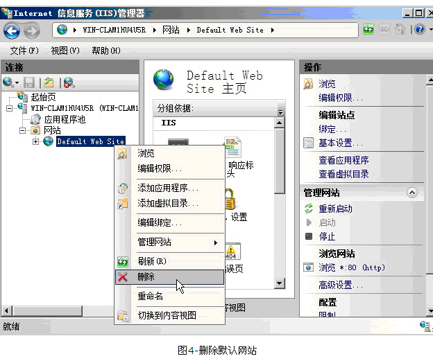
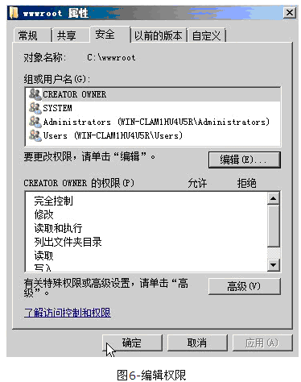
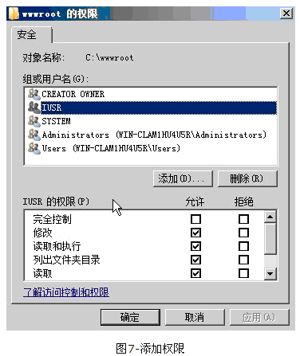
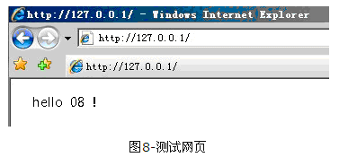
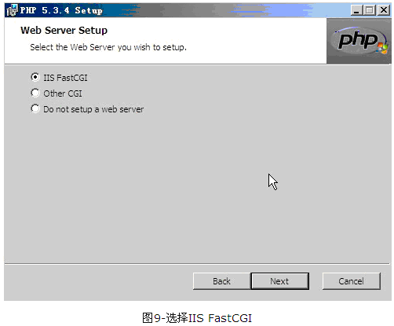
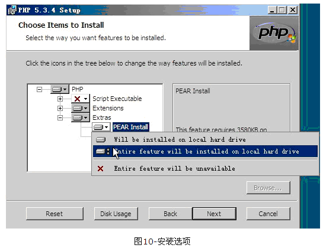

windows server 2008 php 环境搭建
一、前言
windows server 2008是基于NT6 平台的新型操作系统，其对硬件性能的发挥比起其它NT平台来说有了质的飞跃，已经开始普及到了广大用户中，而且操作较2003来说更为直观和简单，受到越来越多的好评。在这里我们要介绍windows server 2008中的php环境搭建。
二、安装环境
- 2.1 安装IIS
- windows server 2008的IIS版本为7.0，包括fastcgi，安装十分方便。
打开“开始”菜单→“服务器管理”，出现服务器管理界面（图1)

在图中黄色框中填入服务器ip，点击打开，之后提示输入用户名和密码，验证成功后完成登录服务器。

点击“下一步”之后，需要选择功能，这里需要比默认选项多增加一个“cgi”（图3）

点击“下一步”，将会需要确认一下安装的内容，此时点击安装，即可将IIS安装在操作系统中。
安装好IIS之后，需要进行一个测试，在浏览器地址栏中输入“http://localhost/”，如果出现IIS7的欢迎页则说明正常。接下来需要配置一个新网站，首先打开IIS管理器（“开始”→“所有程序”→“管理工具”→“internet 信息服务（IIS）管理器”）。
然后删除默认网站，在主菜单中，展开网站菜单，然后再网站名称上右键，点击删除即可(图4）

再新建一个网站，在“网站”上右击，点击添加网站，会出现信息网站添加的表单，首先输入网站名称，例如“08cms”，路径选择为网站存放的路径，单IP的服务器可以不必选择IP，主机头填写为localhost，然后点击确定。

添加好网站后，打开网站目录，新建一个index.html，然后用记事本打开，输入“hello 08”做测试。
还需要配置权限，回到IIS管理器中，在网站“08cms”上右键，点击“编辑权限”，进入后点击“安全”选项卡，再点击其中的“编辑”（图6）

打开“编辑”窗口后点击“添加”按钮。添加一个“IUSR”到权限用户列表中，然后为其勾选除了“完全控制”之外的权限。然后点击“确定”。(图7）

还需要在“属性”窗口再次点确定，否则权限无法保存。
结束此步骤后，就可以访问本地地址“http://127.0.0.1”进行测试了，网页上显示出了“hello 08”，说明配置成功

- 2.2 php安装
-
在前面已经提过，IIS7中不必单独安装fastcgi，所以，我们只需要下载php安装包进行安装即可，下载地址：http://windows.php.net/downloads/releases/archives/
下载好后，打开安装程序，经过引导，配置好路径，来到选择“web server setup”的地方，在这里我们选择“IIS fastcgi”(图9）

然后点击“next”按钮，到了选择安装选项的步骤，一般安装默认的就可以了，如果要添加的话需要点击一下前面的磁盘小图标，然后选择安装，第一项是只安装选中的项目，第二项是安装所有该项目的子项目。（图10）配置好后进入下一步

配置好后，点击“next”然后点击“install”即可安装php。
安装完成后，我们还是需要测试一下，打开刚才新建的网站目录，新建一个test.php文件，用记事本打开，输入
<?php
echo phpinfo();
?>
保存退出，再从浏览器中访问http://127.0.0.1/test.php
显示出php信息，说明php环境安装成功。
- 2.3 mysql 安装
- windows server 2008中mysql的安装和windows server 2003中完全一样，请参阅windows server 2003 php环境搭建中的mysql 安装